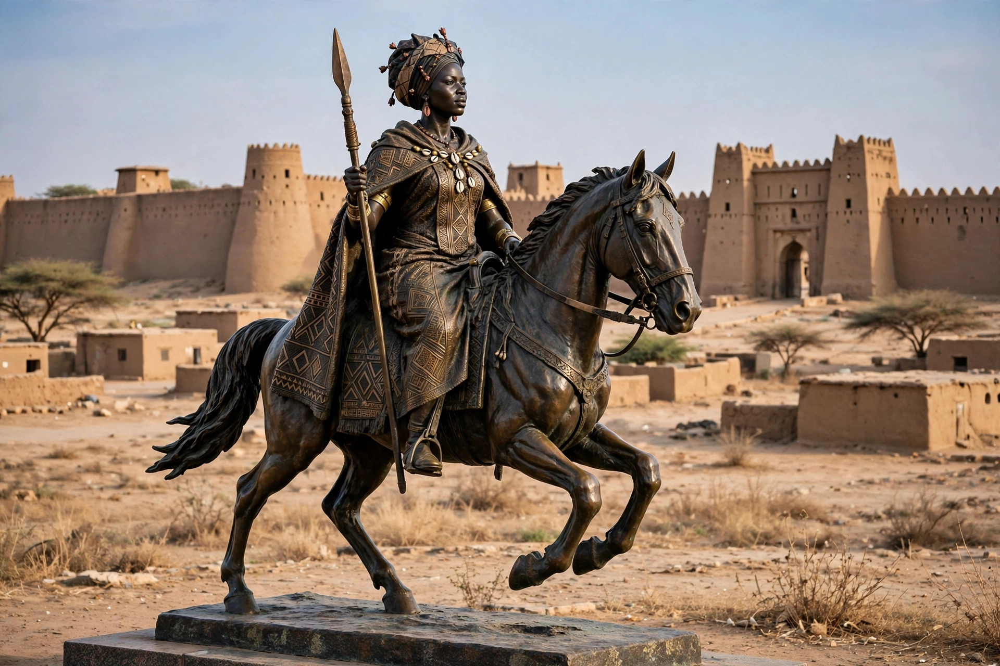

Amina
| Amina of Zazzau | |
 | |
| Reign | c. 1576 – 1610 (dates debated) |
|---|---|
| Polity | Zazzau (Zaria), Hausa city-state, present-day Nigeria |
| Predecessor | Her brother Karami (in most traditions) |
Amina (also Aminatu; c. 1533 – 1610) was a Hausa warrior queen of the city-state of Zazzau, in what is now the Zaria region of north-central Nigeria. She is celebrated in Hausa tradition as the greatest of Zazzau's rulers, who expanded its territory through decades of warfare and built the great earthen walls — the ganuwar Amina ("Amina's walls") — that still encircle Hausa cities.
Life and reign
According to the Kano Chronicle and oral traditions, Amina was the daughter of Queen Bakwa Turunku, the founder of Zaria. Trained in warfare from youth, she led cavalry expeditions that pushed Zazzau's dominion south to the Niger and Benue rivers and compelled tribute from neighbouring states, securing trade routes for kola nuts, leather, horses, and slaves.
Legacy
Amina is one of the most famous women in pre-colonial African history, honoured with statues in Lagos and Kaduna and remembered as a symbol of female leadership. Scholars debate the exact dates of her reign — traditionally placed in the 16th century, though some argue for the mid-15th — and the extent to which chronicle traditions blend fact and legend.
See also
Recreated from memory as a standalone page.